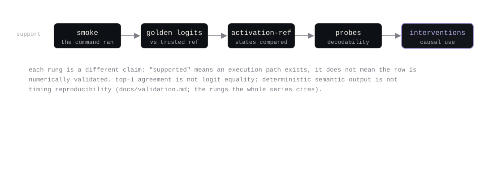
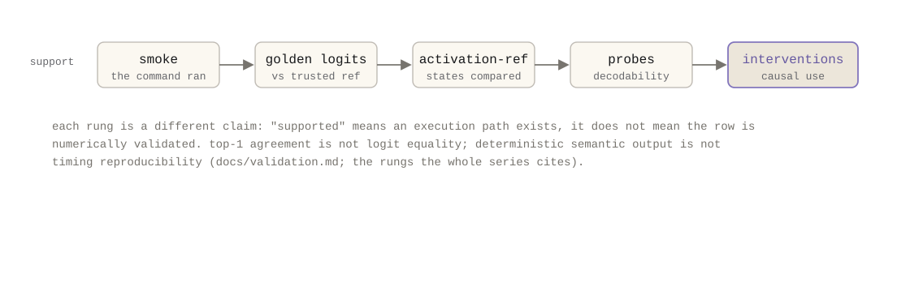

بناء محرك استدلال يزداد سرعة من غير ما يصبح أصعب في الوثوق به. Ember طبقة بحثية مكتوبة بـ Rust للاستدلال على CPU، مخصّصة لاستخراج الـ hidden states والتدخّل السببي والتجارب القابلة للاستنساخ على نماذج GGUF. يملك مسار استدلال خاصًا به، لا لمنافسة llama.cpp في الإنتاجية، بل عشان النموذج اللي يشتغل مو هو النموذج اللي تقدر تفحصه وتعدّله وتتحقق منه. تتابع السلسلة هذي داك المسار إصدارًا بإصدار، ومن ضمنها الإخفاقات.


| الإصدار | التاريخ | ما أضافه | الأطروحة في سطر |
|---|---|---|---|
| v0.1.0 | 2026-07-31 | تحميل GGUF، prefill/decode على CPU، KV cache، تتبّع، استخراج hidden states، قياس أداء حتمي | استدلال أصبح مقروءًا بما يكفي للبحث في دواخل النماذج |
| v0.2.0 (tag رجعي) | التنفيذ 2026-08-01 | التقاط تنشيطات، hooks تدخّل، استبدال تنشيطات، patch بين الجلسات، استعادة مطابقة للبت، artifacts منظمة | من الملاحظة الوصفية إلى التجارب السببية |
| v0.3.0 | 2026-08-03 | تنفيذ Q4_K/Q6_K أصلي، أوزان مضغوطة مقيمة في الذاكرة عبر mmap، kernels عددية وAVX2، توازٍ خارجي | كمّي على القرص، كمّي في الذاكرة |
| v0.4.0 | 2026-08-04 | خطط تنفيذ غير قابلة للتغيير، scratch arenas، مجموعة fusion مجمّدة مع defusion بقيادة الـ hooks، matvec متوازي الأعمدة | خطّط للـ token مرة واحدة؛ أبقِ كل hook قابلًا للملاحظة |
| v0.5.1 | 2026-08-04 | مواصفات ember.experiment.v1، اختيار tokens بدقة البايت، hooks دلالية، حزم حتمية، تحقق من غير اتصال | قابلية الاستنساخ كميزة في زمن التشغيل |
ابدأ بالجزء 0، وإذا كنت تدير تجارب على دواخل النماذج، فالجزء 5 يعرض سير عمل تقدر تشغيله اليوم من غير كتابة Rust. كل مقال مستقل بذاته ويستشهد بـ artifacts الموجودة في المستودع خلف ادعاءاته، ومن ضمنها اللي فشلت.